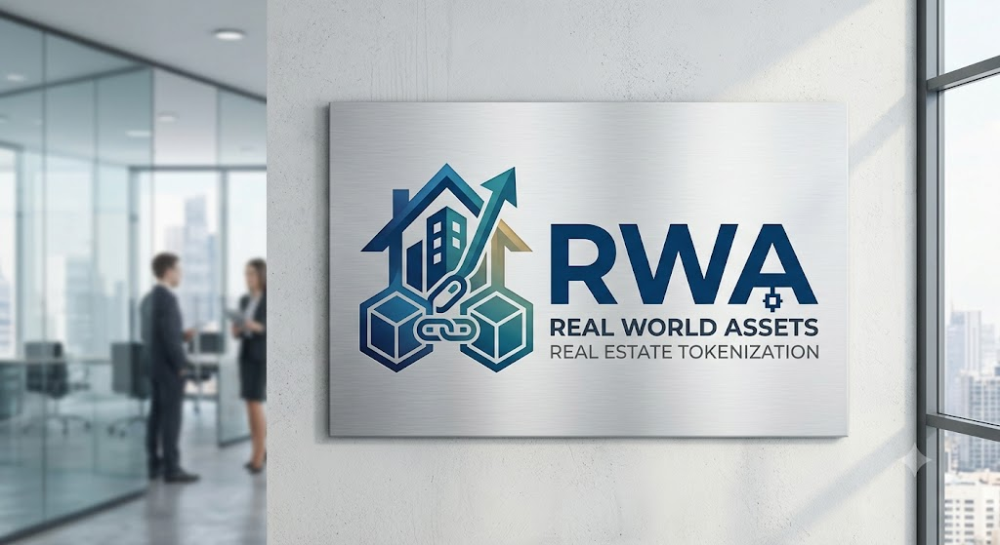

01
유치권 행사
공사대금 등을 이유로 점유를 주장하는 유치권자와의 협상이 선행되어야 합니다. 권원 검증과 협상 경험이 없으면 매수 자체가 성립하지 않습니다.
권리 분석 · 협상력
세계 경제의 불확실성과 통화 가치 하락의 시대.
소유한 자산을 지키는 방어 메커니즘부터 실질적인 자산 증식의 길까지 제시합니다.
리스크 관리가
곧 수익이다
KRWA Team은 세계 최대 자산운용사 블랙록(BlackRock)의 리스크 우선 철학을 벤치마킹하여 고객의 자산을 관리합니다.
1988년 래리 핑크(Larry Fink) 회장이 설립한 블랙록은 “우리가 모르는 위험으로 손실을 보지 않겠다”는 원칙에서 출발했습니다. 투자 결정 시 “얼마나 벌 수 있는가”보다 “최악의 상황에서 손실 규모가 어디까지 확대되는가(Worst-Case Scenario)”를 먼저 산출합니다.
상대적인 원화 가치 하락 속에서, 철저한 위험 분석 없이는 어떤 자산도 안전할 수 없습니다. KRWA Team은 정교한 리스크 검증을 바탕으로 소중한 자산을 지키고 증식하는 시스템을 제공합니다.
공매란 무엇인가
공매는 세금 체납 등으로 공공기관에 압류된 자산을, 한국자산관리공사(KAMCO)가 운영하는 온라인 플랫폼 온비드(OnBid)를 통해 일반인이 매수할 수 있도록 공개하는 제도입니다. 법원이 주관하는 경매와는 절차도, 리스크도 다릅니다.
| 구분 | 공매 온비드 / KAMCO | 경매 법원 / 대법원 |
|---|---|---|
| 주관 기관 | 한국자산관리공사 · 온비드 | 법원 (법원경매정보) |
| 입찰 방식 | 온라인 전국 어디서나 입찰 | 현장 지정된 날짜 · 지정 법원 방문 |
| 수의계약 | 가능 협상 여지 존재 | 불가 최고가 매수 신고인이 낙찰 |
| 유치권 · 명도 | 낙찰자 직접 해결 명도소송 필요 | 법적 집행력 인도명령 등 활용 |
| 가격 수준 | 감정가 대비 저가 매수 기회 | 경쟁 입찰로 낙찰가 상승 경향 |
핵심은 여기입니다. 공매는 가격이 싸고 수의계약이 가능하지만, 경매와 달리 유치권과 명도를 낙찰자가 스스로 해결해야 합니다. 바로 이 지점 때문에 대부분의 투자자가 공매에 진입하지 못합니다.
일반 투자자가 넘지 못하는
공매의 3대 난제
물건이 싸다는 사실은 누구나 압니다. 그럼에도 우량 물건이 방치되는 이유는 가격이 아니라 구조적 리스크에 있습니다.
공사대금 등을 이유로 점유를 주장하는 유치권자와의 협상이 선행되어야 합니다. 권원 검증과 협상 경험이 없으면 매수 자체가 성립하지 않습니다.
권리 분석 · 협상력점유자 1세대를 내보내는 데 통상 6개월이 소요됩니다. 다세대 물건에서는 점유자가 같은 건물의 다른 층으로 이동하며 절차를 반복시키는 경우도 발생해, 기간과 비용이 무한정 늘어납니다.
기간 리스크 · 소송 비용통상 계약금 10% 후 1개월 내 잔금 90%를 납부하고 소유권을 이전해야 합니다. 이 순간부터 취득세, 대출 이자, 보유 부담, 매각 지연 시 양도 리스크가 동시에 발생합니다.
자금 부담 · 세금 · 이자세 가지가 동시에 해결되어야 공매 물건은 비로소 ‘투자 가능한 자산’이 됩니다. 현금이 충분해도 1·2번이 막히면 아무도 손을 대지 못합니다.
소유권 이전 없이
보관금 10%로 시작하는 구조
KRWA Team은 20년 이상 축적한 유치권·명도 처리 역량을 기반으로 금융기관과 직접 협약합니다. 잔금을 전액 치르고 소유권을 이전하는 대신, 보관금만 예치한 미등기 상태에서 매각과 정산을 진행합니다.
시장이 예상대로 움직이지 않으면 전액이 리스크에 노출됩니다.
잔금 대출 이자 · 취득세 · 보유 부담이 구조적으로 제거됩니다.
유치권과 명도를 실제로 종결시켜 본 경험이 금융기관과의 협약을 가능하게 하는 전제 조건입니다.
은행은 부실채권을 정리해야 다음 여신을 일으킬 수 있습니다. 이해관계가 일치하기에 협상이 성립합니다.
전액 매수가 아닌 보관금 기반 구조이므로, 초기 투입 자금과 보유 기간 비용을 함께 통제합니다.
가정 사례로 보는 진행 구조
아래는 구조 이해를 돕기 위한 가정 시나리오입니다. 실제 물건의 감정가·낙찰률·매각 기간은 건별로 다르며, 수익을 보장하지 않습니다.
대출 원리금 회수가 지연되며 25채 · 총 50억원 규모의 부실채권이 형성됩니다.
채권 정리를 위해 공매로 이관됩니다. 통상 감정가의 30~40% 수준까지 매수 기회가 열립니다.
40% 기준으로 환산하면 1채당 약 1억 2천만원. 시세 대비 절반 수준입니다.
유치권과 명도소송이 해결되지 않아, 가격이 아무리 낮아도 매수자가 나서지 않습니다.
유치권·명도를 선행 종결하고 금융기관과 협약해 보관금 10% 예치, 미등기 상태로 진행합니다.
지역 중개 네트워크를 통해 12~18개월간 순차 매각하고 금융기관과 정산합니다.
| 항목 | 일반 매수 방식 | KRWA 보관금 구조 |
|---|---|---|
| 초기 투입 | 계약금 10% + 잔금 90% | 보관금 10% |
| 소유권 이전 | 필수 | 미등기 유지 |
| 취득세 | 발생 | 미발생 |
| 잔금 대출 이자 | 지속 발생 | 미발생 |
| 매각 지연 시 | 보유 비용 · 이자 누적 | 계약 기간 내 순차 매각 |
진행 프로세스
온비드 공고를 전수 검토하고 등기·점유·체납 관계를 정밀 분석합니다.
유치권의 성립 여부를 검증하고 협상을 통해 권리관계를 정리합니다.
점유자 현황을 파악하고 협의·법적 절차를 병행해 명도를 종결합니다.
보관금 기반 계약 구조를 설계하고 자금 관리 조건을 명문화합니다.
지역 중개 네트워크를 통해 순차 매각하고 약정에 따라 정산합니다.
주요 프로젝트 및 서비스
실물 자산에서 출발해, 변화하는 자본 시장의 흐름까지 연결합니다.
시장의 하락 리스크를 방어하고 효율적인 수익 기회를 창출하는 공매 기반 자산 전략. 유치권·명도·자금 구조를 일괄 설계합니다.
탈중앙 금융 프로토콜을 활용하여 투명성과 운용 효율성을 확보하는 금융 솔루션을 컨설팅합니다.
실물 연계 자산(Real World Assets)과 디지털 금융을 연결하여 안정성과 실질 수익 성과를 추구합니다.

자주 묻는 질문
경매는 법원이 주관하며 지정된 날짜에 해당 법원에서 현장 입찰해야 하고, 최고가를 써낸 사람이 낙찰받습니다. 공매는 한국자산관리공사가 운영하는 온비드를 통해 전국 어디서나 온라인으로 참여할 수 있고 수의계약도 가능합니다. 다만 유치권과 명도를 낙찰자가 직접 해결해야 한다는 점이 결정적인 차이입니다.
포털에서 ‘온비드’를 검색하면 한국자산관리공사가 운영하는 공식 사이트로 바로 접속할 수 있습니다. 공고와 물건 정보는 누구나 열람 가능합니다.
유치권과 명도소송이 해결되지 않은 채로 남아 있기 때문입니다. 금융기관 입장에서도 부실채권을 정리해야 다음 여신을 일으킬 수 있지만, 이 두 가지가 밑바탕에 깔려 있으면 아무리 낮은 가격에도 매수자를 찾기 어렵습니다.
점유자 1세대를 내보내는 데만 통상 6개월가량 걸립니다. 여러 호실이 있는 건물에서는 점유자가 같은 건물 내 다른 층으로 이동해 절차를 다시 시작하게 만드는 경우도 있습니다. 이렇게 되면 기간이 무한정 늘어나고, 그동안 투입 자금 전체가 리스크에 묶입니다.
소유권을 이전하는 순간 취득세가 발생하고, 잔금을 대출로 조달했다면 이자가 계속 나갑니다. 매각이 지연되면 이 비용이 그대로 손실로 쌓입니다. 보관금을 예치한 미등기 상태로 진행하면 이 비용 구조 자체가 발생하지 않아, 매각 기간에 여유를 확보할 수 있습니다.
아래 이메일로 문의를 남겨주시면 담당자가 회신드립니다. 물건 구조와 진행 방식은 건별 조건이 달라 구체적인 내용은 별도 상담을 통해 안내해 드립니다.
자산 방어 솔루션 상담받기
KRWA Team과 함께 안전하고 정교한 자산 증식 전략을 세워보세요.
관심 있으신 분께는 오프라인 미팅을 통해 상세히 안내해 드립니다.
약 5분 30초 · 데이터 사용량이 발생할 수 있습니다.